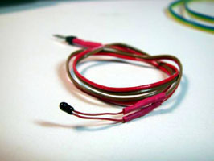
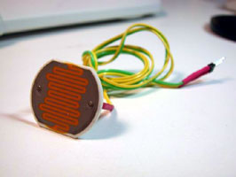
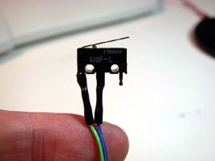
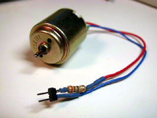
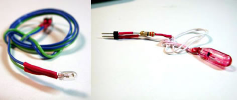
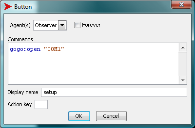
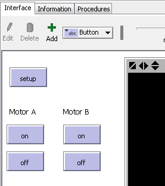
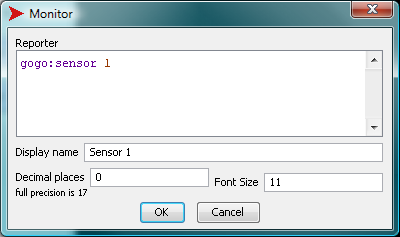

NetLogoLab是连接Netlogo和物理世界的技术基础。它在机器人学，交互艺术，科学研究和模型验证上都有用处。这个基础是在CCL被 Paulo Blikstein 和Uri Wilensky 在2005作为Bifocal Modeling 计划的一部分被创建的。更多的信息包括学术文章、模型和演示等请点击 old。
NetLogoLab是由以下的软件和硬件组成的：
NetLogo的机器人板或者数据日志板的选择是GoGo Board，开源的，容易构建的，低成本的界面，最初是由 the MIT Media Lab 的Arnan Sipitakiat 和 Paulo Blikstein设计的。其他的机器人硬件可以使用NetLogo，包括那些市场上能买到的，例如Arduino 板， Vernier 和 Pasco 传感器和制动器， Phidgets， Lego robotics 装备， 和VEX 装备，但是具体的扩展还没有被每一个平台开发。目前为止，只有GoGo板扩展可以使用 NetLogo的标准配置。
NetLogo的GoGo扩展提供了与GoGo板中交流的原语。这使得用户可以通过物理世界的传感器，发动机，灯泡，LED，继电器和其他设备与NetLogo联系。
GoGo 板 GoGo板是一个开源、易做、便宜、通用的板卡，用于教育项目。它是Arnan Sipitakiat 和 Paulo Blikstein在 MIT Media Lab于2001年创造的，一直以来被广泛改进。如今被用于超过10个国家，例如美国，中国，泰国，韩国，巴西，葡萄牙，墨西哥，马来西亚和埃及。
有8个传感器端口（例如，温度，灯光，压力）和4个输出端口（例如，发动机，灯泡，LED，继电器）可以同时与板连接。还有一个用于连接附加卡（如显示器、蓝牙或者无限通信模块，录音设备，实时钟表和GPS）的连接器。
NetLogo可以用两种方式与物理世界交互。第一，可以收集环境数据。这些信息可为模型使用，用于改变或校准它的行为。这些数据是通过电子传感器得到的，它们可以衡量很大范围的参数：温度，光照，触碰（如下图所示），pH，化学浓度，压力等等。
  
NetLogo和物理世界交互的第二种模式使控制输出设备，或者"制动器"——发动机，灯泡（如下图所示），LED，和其他包含这些输出的复杂设备，例如玩具，遥控车，电器和自动化实验设备。
 
对于有意愿开始机器人或者传感项目的教学者来说，对于使用的传感器和制动器的确切类型，有一些重要的考虑因素——例如，坚固性，可靠性，"开放性"，以及购买这些设备的花费。在价格和复杂性上都有很大的差别，例如，对于大多数教育项目来说，成品，没有商标的，低成本的传感器可以被用在非常可靠的结果上。一个没有商标的温度传感器，精度在0.5摄氏度就可以在大多数传感器和电子零售店以1美元的价格来买了。使用没有商标的的低成本的传感器需要对电子非常基础的知识。例如，一些基础的电焊可能需要在传感器上附加一段电线。尽管在学校是可行的，也在很多教育场合下试验过，但是一些教育者还是倾向于购买有所有权的传感器和制动器，这些已经能够直接使用了。一些公司提供的教育传感器比一般的传感器要更加稳固和可靠，但是也更贵。作为比较，一个有所有权的温度传感器可能需要花费50美元。制动器也是这个规则：例如，一个没有商标的装连齿轮的发动机可能花费3到10美元，而一个有所有权的可能需要30到40美元。
传感器和制动器可以通过在线零售商购买，例如 Digikey， Mouser，Phidgets，Spark Fun，和 Solarbotics。更多关于如何找到合适的传感器的信息请看 "How to Make Sensors" 。
要使用GoGo板扩展和NetLogoLab框架，用户需要使用扩展允许的特殊原语创造NetLogo模型。在这段文字的后面，我们会提供一些模型的例子。
GoGo板是开源的硬件（查看开源硬件许可证 here），所以每个人都可以免费的做一个GoGo板甚至售卖了。要得到一个GoGo板，只能自己做一个，要求或者雇佣别人帮你做，或者从现有的零售商例如 SEED Foundation （或者查看 here）那里买。 很多电子组件公司也组装板，但是他们通常需要最小的订购量，可能是5到50个。 主要的GoGo板来源是这个网站 www.gogoboard.org，你可以找到购买组件，设计印制电路板，组装的每一个步骤的指导——这个板特别设计的简单方便组装，即使你没有电子的技术。GoGo板邮寄列表是 gogoboard@yahoogroups.com，也可以通过到Yahoo groups加入。
GoGo板与电脑通过USB接口连接（旧的版本中使用的是需要一个USB-串口转换器的串口连接——一个运行的很好的模型是Keyspan） USA-19HS)。要连接，首先确认将USB线插入了电脑。打开GoGo板，使用电源连接器后的开关：板会响两声，红灯会亮。
在Mac OS X中，GoGo扩展不需要特别安装。
很多版本的Linux不需要特别安装，然而，如果你面临问题，确保你可以在串口设备中写入数据（通常，这表示/dev/ttyS*）。在多数的Linux配置中，这个可以通过用户管理器解决。
当你下载安装NetLogo时，GoGo扩展就开始被预安装了。要在你的模型中使用它，在代码页最上方加入：
extensions [gogo]
如果你的模型已经使用了其他的扩展，那就已经有 extensions行了，只要在列表中加入gogo就可以了。
扩展加载后，在命令中心输入以下命令，查看哪些端口可用：
print gogo:ports
使用 gogo:open 命令打开GoGo所连的端口，使用ping 报告器查看该端口是否有反应。注意，要想和板沟通，必须要知道连接的是哪个接口。如果你不确定使用的是哪个接口，你可以使用gogo:ports原语查看（如下），或者也可以在windows电脑中使用设备管理器查看（在控制面板中，点击系统标志），或者系统文件夹在Mac OS X中。
在Windows中：
gogo:open "COM1" print gogo:ping
在Linux中：
gogo:open "/dev/ttyS01" print gogo:ping
在Mac中：
gogo:open "/dev/tty.KeySerial1" print gogo:ping
更多NetLogo扩展信息，看Extensions Guide。
保存为JAVA小程序的模型（使用文件菜单中"Save as Applet"）不能使用GoGo扩展。JAVA小程序不能使用需要外部数据库的扩展，也不能连接外部设备。例如使用GoGo扩展，见NetLogo模型库中示例模型下的 Robotics/NetLogoLab部分。
创建NetLogoLab模型的第一步就是在NetLogo的编码页中添加 extensions 关键字。 打开编码页，添加：
extensions [gogo]
第二步是创建一个按钮，使其能像上文中所说一般使用正确的串口连接NetLogo和GoGo板。
gogo:open "COM1" ;; (for Windows machines)
建完按钮后，"edit"对话框应该如图所示：

现在，让我们打开模型。想想我们想要控制四个轮子，并且后轮上有两个发动机的车。我们假设你已经制造了这样一辆车而且把发动机连接到了GoGo板上的输出接口"a"和"b"。一种非常简单的办法就是为每个发动机创建两个按钮，"开" 和 "关":

和这些按钮相关的代码很简单：对于"开"按钮，我们只需要：
gogo:talk-to-output-ports ["a"]
gogo:output-port-on
对于关按钮也是类似的：
gogo:talk-to-output-ports ["a"] gogo:output-port-off
其他的 "开" 和 "关"按钮，用来控制第二个发动机，也是类似的代码，除了我们要使用第二个接口 ("b")，因此：
gogo:talk-to-output-ports ["b"]
我们可以添加 "方向盘"按钮来时我们的模型更有趣，按照以下代码添加按钮，按钮会倒转发动机"a" 和 "b"的方向：
gogo:talk-to-output-ports ["a" "b"] gogo:output-port-reverse
要创建一个简单的传感项目，我们需要架设你已经在模型中加入了GoGo扩展，而且成功的打开了GoGo板的连接，也就是，添加"extensions"命令在代码页中，按照之前的描述添加"setup"按钮。对于这个传感项目，我们不需要发动机，但是我们需要另一种设备：温度传感器（点击查看 更多关于典型温度传感器的信息 在Digikey的网站)。关于如何购买和组装温度传感器的指导见. "Making Sensors" 在GoGo板网站上的教程。这是一个温度传感器组装成功后的样子。
温度传感器最简单的用处，很显然，就是显示温度。我们可以在NetLogo界面上添加这行代码来添加显示器：
gogo:sensor 1

这些显示的传感器的值是给定范围内的任意值，需要被转换为实际的温度单位，例如摄氏度或者华氏度。对于所有的传感器来说，GoGo板的显示范围是0到1023.每个传感器有个有转换公式或表的数据集，能够将0-1023中的任意值转换为实际物理单位。我们想想，传感器的数据集包含一个转换公式，就像 degrees = arbitrary value / 30。NetLogo界面上的显示器就会变为：
gogo:sensor 1 / 30
传感器的只也能控制屏幕上的物体，如乌龟。例如，我们创建两个按钮，一个是"新建一个乌龟"的按钮，它会清除整个世界，然后新建一个乌龟，另一个是 "随着热量移动"按钮，它会使乌龟根据传感器读到的温度向前行走。这个代码是这样的：
to create-one-turtle
clear-all
create-turtle
end
to move-with-heat
if gogo:sensor 1 < 500
[ forward 1 ]
end
如果"随着热量移动"的永恒按钮被激活，而且用户给传感器加热（擦传感器，或者慢慢地将火苗移近它），热量会被吸收（< 500），乌龟就会移动。（注意，我们使用的温度传感器的电阻随着温度升高 减少，所以传感器的读数会随着我们加热传感器而降低。这是一种非常常见、便宜的成品传感器）。
一个这种传感器装置更加复杂的用法就是控制外部设备，例如发动机。例如，用户可以，当传感器的值到达500时，打开发动机。代码如下：
to turn-motor-on-with-heat
if gogo:sensor 1 < 500
[
gogo:talk-to-output-ports ["a"]
gogo:output-port-on
]
end
另一种传感器原语的用途是画图和记录数据。记录日志对于更详细数据的分析和比较很有用，可以从NetLogo列表的命令中得到。例如，如果用户想要记录传感器1没0.5秒的数值，代码如下：
to log-data-from-sensor set data-vector lput (gogo:sensor 1) data-vector wait 0.5 end
最后，画出数据非常简单。例如，如下的代码会为传感器1的值绘制一个图标：
plot (gogo:sensor 1)
更多关于GoGo板的扩展函数和原语，请看着两个例子：GoGoMonitor.nlogo和GoGoMonitorSimple.nlogo。
gogo:burst-value gogo:close gogo:open gogo:open? gogo:ports gogo:output-port-coast gogo:output-port-off gogo:output-port-reverse gogo:output-port-[that|this]way gogo:ping gogo:sensor gogo:set-burst-mode gogo:set-output-port-power gogo:stop-burst-mode gogo:talk-to-output-ports
读取最近一次gogo板从传感器中得到的成组数据。
见gogo:set-burst-mode 和 gogo:stop-burst-mode.
关闭和GoGo板的连接。
见gogo:open 和 gogo:open?.
打开一个和叫做port-name的串口连接的GoGo板。 见 gogo:ports 更多关于port-name的信息。
如果GoGo没有响应，或者你尝试打开一个没有GoGo板连接的串口，就会生成错误。
例子：
gogo:open "COM1"
见 gogo:open? 和 gogo:close。
如果有一个GoGo板连接开启，就回复true。否则回复false。
返回GoGo板可能连接的一列串口的名字。一些电脑上，你可能会得到一列两三种不同的串口。这种情况下，尝试着打开每一个，知道连接成功。
关闭运作中的接口。当和发动机项链的时候，不会作为刹车力 像 gogo:output-port-off 一样。因此，发动机在完全停下前会慢慢变慢。和 gogo:output-port-off在除了发动机以外的其他外部设备上的效果相似。被这条命令影响的外部接口有 gogo:talk-to-output-ports 决定。
以下代码会打开一个外部端口1秒钟，然后渐渐将发动机停下来。
gogo:talk-to-output-ports ["a"] gogo:output-port-on wait 1 gogo:output-port-coast
关闭外部端口。如果再使用发动机，就有刹车力。被这条命令影响的外部端口是有 gogo:talk-to-output-ports 决定的。
打开外部端口。受这条命令影响的外部端口有 gogo:talk-to-output-ports 决定。
转换外部端口的方向。被这条命令影响的外部端口有 gogo:talk-to-output-ports 决定。
对给定方向的端口开启。外部端口可以在两个方向给力，任意的称为 这边 和 那边。被这条命令影响的外部端口有 gogo:talk-to-output-ports 决定。注意这和gogo:output-port-reverse不同，因为给定连接器的两极相同的话， 这边 和 那边 总是相同的。
这条命令会使相关的外部端口给力。它们是被 gogo:output-port-on 和 gogo:output-port-off影响的端口。用户可以和一个或多个端口同时"说话"。外部端口一般和发动机相连，不过也可以用灯泡，LED，和继电器。外部端口一般用一个字母区分，例如： "a", "b", "c", and "d".
例子：
;; talk to all output-ports gogo:talk-to-output-ports [ "a" "b" "c" "d" ] ;; will give power to all output-ports gogo:output-port-on ;; talk to output-ports A and D gogo:talk-to-output-ports [ "a" "d" ] ;; will turn off output-ports A and D. ;; The other output-ports will keep ;; their current state gogo:output-port-off gogo:talk-to-output-ports [ "c" "b" ] ;; turn off remaining output-ports gogo:output-port-off
检查GoGo板的状态。通常是用来确认板是否与串口连接。如果GoGo板返回一个诊断的信息，则返回true，否则返回false。
例子：
print gogo:ping
返回名为sensor的传感器的值。传感器用1-8来编码。值从0到1023.如果没有与端口相连的传感器就返回1023(最大的电阻)，或者当传感器是开放的状态的时候。如果传感器短路了（没有电阻），就返回0.
例子：
print gogo:sensor 1 ;; prints the value of sensor 1 foreach [ 1 2 3 4 5 6 7 8 ] [print (word "Sensor " ? " = " gogo:sensor ?)] ;; prints the value of all sensors if gogo:sensor 1 < 500 [ ask turtles [ fd 10 ]]
;; will move all turtles 10 steps forward if sensor 1's value is less than 500. loop [if gogo:sensor 1 < 500 [ ask turtles [ fd 10 ] ] ]
;; will continuously check sensor 1's value and ;; move all turtles 10 steps forward every time ;; that the sensor value is less than 500.
打开在sensor-list中的传感器的 "burst mode"。如果 high-speed-mode? 为 true，那么告诉的组模式就会被使用。如果为false，那么低俗的组模式会被使用。
See also gogo:burst-value and gogo:stop-burst-mode.
例子：
gogo:set-burst-mode [ 1 2 3 ] true
;; turns on high speed burst mode for sensors 1, 2 and 3
gogo:set-burst-mode [ 4 ] false
;; turns on low speed burst mode for sensor 4
;; this will also override any previous set-burst-mode calls
;; so there will be no new burst mode data for sensors 1, 2 and 3
为运作中的外部端口设置能量等级。power-level 是介于0（关闭）和7（全力）之间的数字。受这条命令影响的外部端口有 gogo:talk-to-output-ports决定。 注意，对于很多实用应用来说，使用机械设备更加方便，例如齿轮和滑轮，来控制发动机的扭矩。
例子：
gogo:talk-to-motors ["a" "b" "c" "d"] gogo:set-motor-power 4 ;; will lower the power of all output ports by half of the full power .
关闭所有传感器的"burst mode" 。